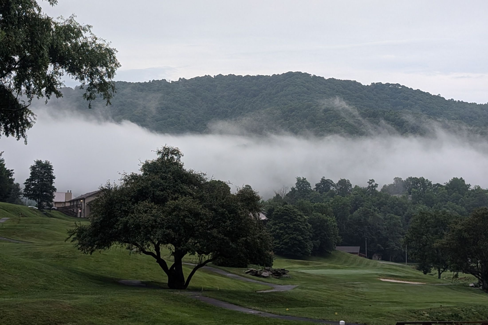

Code
Backend and data engineering, mostly in Python. Source is on GitHub.
-
04.1
CS 3537
Game Score Aggregator
Aggregates and normalizes critic and user scores from IGDB, Steam, and Metacritic into a single weighted ranking across 300,000+ titles, reconciling titles across sources with incompatible scales. Graded on Cloud Run over Cloud SQL Postgres with scheduled ingestion through Cloud Run Jobs and Cloud Scheduler. Rebuilt after the course to serve a small SQLite snapshot from one Cloud Run container, taking hosting from ~$1/day to effectively $0.
-
04.2
CS 4440
Streamflow Forecasting & Damage Classification
Two deep learning pipelines: bias correction of National Water Model streamflow forecasts, and building damage classification from post-hurricane UAV imagery. Reproducing the damage paper's methodology surfaced data leakage in its original evaluation split.
-
04.3
CS 3435
OpenCritic Scraper & Analyzer
Scrapes 10,000 OpenCritic titles and carries them through cleaning, exploration, and modeling in one pipeline. Parses robots.txt at runtime and honors the published crawl-delay instead of hardcoding a rate.
-
04.4
CS 4800
Asset Flip
A 2D side-scrolling platformer in Godot 4, with real-time physics, state-driven enemy AI, and a signal-driven event architecture across five playable levels.
-
04.5
CS 4440
Classification & Regression Pipelines
Two end-to-end scikit-learn pipelines: four-class student performance classification (logistic regression, 54.4% accuracy) and auction verification regression (random forest, R² = 0.991). GridSearchCV with 10-fold cross-validation.